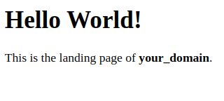

on Ubuntu")
Introduction
A “LAMP” stack is a group of open source software that is typically installed together in order to enable a server to host dynamic websites and web apps written in PHP. This term is an acronym which represents the Linux operating system with the Apache web server. The site data is stored in a MySQL database, and dynamic content is processed by PHP. While this guide focuses on Ubuntu, you can also Set up a LAMP stack on Debian 11 using similar principles.
In this guide, you’ll set up a LAMP stack on an Ubuntu 22.04 server. These steps remain consistent for Ubuntu v18.04 and above.
Key Takeaways:
- LAMP is a foundational web stack. LAMP combines Linux, Apache, MySQL, and PHP to support dynamic web applications and websites.
- Install the components in order. Install Apache first so you can serve HTTP traffic, then MySQL to store application data, and finally PHP to generate dynamic responses.
- Configure the firewall early. Use UFW to allow HTTP traffic on port
80so Apache is reachable while keeping other ports closed by default. - Verify Apache immediately. Loading your server’s public IP address confirms the service is running, the firewall rule is correct, and networking is working.
- Secure MySQL after installation. Running
mysql_secure_installationremoves risky defaults (like anonymous users and the test database) and improves baseline database security. - Enable PHP processing in Apache. Installing PHP and
libapache2-mod-phpensures Apache can execute.phpfiles instead of serving them as plain text. - Make sure Apache serves the right index file. Updating
DirectoryIndexpreventsindex.htmlfrom taking precedence overindex.php, which can break PHP apps. - Use virtual hosts for clean site separation. A virtual host gives each domain its own config and document root, which scales better than putting everything under
/var/www/html. - Test that PHP runs and that it’s safe. Use a quick
phpinfo()page to validate PHP, then remove it because it exposes server details. - Test database connectivity from PHP. Create a dedicated database user and run a simple query from a PHP script to confirm the PHP–MySQL integration works.
- Treat production hardening as a required follow-up. Add HTTPS, restrict firewall rules (especially database access), and keep the system patched with regular updates.
Prerequisites
If you are using Ubuntu version 16.04 or below, we recommend you upgrade to a more latest version since Ubuntu no longer provides support for these versions. This collection of guides will help you in upgrading your Ubuntu version. For reference, you can check our Ubuntu 16.04 LAMP stack guide to understand the differences in installation steps.
In order to complete this tutorial, you will need to have a server running Ubuntu, along with a non-root user with sudo privileges and an active firewall. For guidance on how to set these up, please choose your distribution from this list and follow our Initial Server Setup Guide.
1-click deploy a database using DigitalOcean Managed Databases. Let DigitalOcean focus on scaling, maintenance, and upgrades for your database.
Note: If you prefer containerized deployment, you can also set up your LAMP stack using Docker. Check out our guide on How to Install Docker on Ubuntu for container-based installation.
Step 1 — Installing Apache and Updating the Firewall
The Apache web server is among the most popular web servers in the world. It’s well documented, has an active community of users, and has been in wide use for much of the history of the web, which makes it a great choice for hosting a website. For Apache performance optimization, you can fine-tune various settings based on your specific needs.
Start by updating the package manager cache. If this is the first time you’re using sudo within this session, you’ll be prompted to provide your user’s password to confirm you have the right privileges to manage system packages with apt:
Then, install Apache with:
You’ll be prompted to confirm Apache’s installation. Confirm by pressing Y, then ENTER.
Once the installation is finished, you’ll need to adjust your firewall settings to allow HTTP traffic. Ubuntu’s default firewall configuration tool is called Uncomplicated Firewall (UFW). It has different application profiles that you can leverage. To list all currently available UFW application profiles, execute this command:
OutputAvailable applications:
Apache
Apache Full
Apache Secure
OpenSSH
Here’s what each of these profiles mean:
- Apache: This profile opens only port
80(normal, unencrypted web traffic). - Apache Full: This profile opens both port
80(normal, unencrypted web traffic) and port443(TLS/SSL encrypted traffic). - Apache Secure: This profile opens only port
443(TLS/SSL encrypted traffic).
For now, it’s best to allow only connections on port 80, since this is a fresh Apache installation and you don’t yet have a TLS/SSL certificate configured to allow for HTTPS traffic on your server.
To only allow traffic on port 80, use the Apache profile:
Verify the change with:
OutputStatus: active
To Action From
-- ------ ----
OpenSSH ALLOW Anywhere
Apache ALLOW Anywhere
OpenSSH (v6) ALLOW Anywhere (v6)
Apache (v6) ALLOW Anywhere (v6)
Traffic on port 80 is now allowed through the firewall.
You can do a spot check right away to verify that everything went as planned by visiting your server’s public IP address in your web browser (view the note under the next heading to find out what your public IP address is if you do not have this information already):
http://your_server_ip
The default Ubuntu Apache web page is there for informational and testing purposes. Below is an example of the Apache default web page for Ubuntu 22.04:
If you can view this page, your web server is correctly installed and accessible through your firewall.
How To Find your Server’s Public IP Address
If you do not know what your server’s public IP address is, there are a number of ways to find it. Usually, this is the address you use to connect to your server through SSH.
There are a few different ways to do this from the command line. First, you could use the iproute2 tools to get your IP address by typing this:
This will give you two or three lines back. They are all correct addresses, but your computer may only be able to use one of them, so feel free to try each one.
An alternative method is to use the curl utility to contact an outside party to tell you how it sees your server. This is done by asking a specific server what your IP address is:
Whatever method you choose, you can verify that your server is running by typing in your IP address into your web browser.
Step 2 — Installing MySQL
Now that your web server is up and running, you need to install the database system to store and manage data for your site. MySQL is a popular database management system used within PHP environments.
Again, use apt to acquire and install this software:
When prompted, confirm installation by typing Y, and then ENTER.
When the installation is finished, it’s recommended that you run a security script that comes pre-installed with MySQL. This script will remove some insecure default settings and lock down access to your database system.
Warning: As of July 2022, an error will occur when you run the mysql_secure_installation script without some further configuration. The reason is that this script will attempt to set a password for the installation’s root MySQL account but, by default on Ubuntu installations, this account is not configured to connect using a password.
Prior to July 2022, this script would silently fail after attempting to set the root account password and continue on with the rest of the prompts. However, as of this writing the script will return the following error after you enter and confirm a password:
Output ... Failed! Error: SET PASSWORD has no significance for user 'root'@'localhost' as the authentication method used doesn't store authentication data in the MySQL server. Please consider using ALTER USER instead if you want to change authentication parameters.
New password:
This will lead the script into a recursive loop, which you can only exit by closing your terminal window.
Because the mysql_secure_installation script performs a number of other actions that are useful for keeping your MySQL installation secure, it’s still recommended that you run it before you begin using MySQL to manage your data. To avoid entering this recursive loop, though, you’ll need to first adjust how your root MySQL user authenticates.
First, open up the MySQL prompt:
Then run the following ALTER USER command to change the root user’s authentication method to one that uses a password. The following example changes the authentication method to mysql_native_password:
After making this change, exit the MySQL prompt:
Following that, you can run the mysql_secure_installation script without issue.
Start the interactive script by running:
This will ask if you want to configure the VALIDATE PASSWORD PLUGIN.
Note: Enabling this feature is something of a judgment call. If enabled, passwords which don’t match the specified criteria will be rejected by MySQL with an error. It is safe to leave validation disabled, but you should always use strong, unique passwords for database credentials.
Answer Y for yes, or anything else to continue without enabling.
VALIDATE PASSWORD PLUGIN can be used to test passwords
and improve security. It checks the strength of passwords
and allows users to set only those passwords that are
secure enough. Would you like to set up the VALIDATE PASSWORD plugin?
Press y|Y for Yes, any other key for No:
If you answer “yes”, you’ll be asked to select a level of password validation. Keep in mind that if you enter 2 for the strongest level, you will receive errors when attempting to set any password which does not contain numbers, upper and lowercase letters, and special characters:
There are three levels of password validation policy:
LOW Length >= 8
MEDIUM Length >= 8, numeric, mixed case, and special characters
STRONG Length >= 8, numeric, mixed case, special characters and dictionary file
Please enter 0 = LOW, 1 = MEDIUM and 2 = STRONG: 1
Regardless of whether you chose to set up the VALIDATE PASSWORD PLUGIN, your server will next ask you to select and confirm a password for the MySQL root user. This is not to be confused with the system root. The database root user is an administrative user with full privileges over the database system. Even though the default authentication method for the MySQL root user doesn’t involve using a password, even when one is set, you should define a strong password here as an additional safety measure.
If you enabled password validation, you’ll be shown the password strength for the root password you just entered and your server will ask if you want to continue with that password. If you are happy with your current password, enter Y for “yes” at the prompt:
Estimated strength of the password: 100
Do you wish to continue with the password provided?(Press y|Y for Yes, any other key for No) : y
For the rest of the questions, press Y and hit the ENTER key at each prompt. This will remove some anonymous users and the test database, disable remote root logins, and load these new rules so that MySQL immediately respects the changes you have made.
When you’re finished, test whether you’re able to log in to the MySQL console by typing:
This will connect to the MySQL server as the administrative database user root, which is inferred by the use of sudo when running this command. Below is an example output:
OutputWelcome to the MySQL monitor. Commands end with ; or \g.
Your MySQL connection id is 10
Server version: 8.0.28-0ubuntu4 (Ubuntu)
Copyright (c) 2000, 2022, Oracle and/or its affiliates.
Oracle is a registered trademark of Oracle Corporation and/or its
affiliates. Other names may be trademarks of their respective
owners.
Type 'help;' or '\h' for help. Type '\c' to clear the current input statement.
mysql>
To exit the MySQL console, type:
Notice that you didn’t need to provide a password to connect as the root user, even though you have defined one when running the mysql_secure_installation script. That is because the default authentication method for the administrative MySQL user is unix_socket instead of password. Even though this might seem like a security concern, it makes the database server more secure because the only users allowed to log in as the root MySQL user are the system users with sudo privileges connecting from the console or through an application running with the same privileges. In practical terms, that means you won’t be able to use the administrative database root user to connect from your PHP application. Setting a password for the root MySQL account works as a safeguard, in case the default authentication method is changed from unix_socket to password.
For increased security, it’s best to have dedicated user accounts with less expansive privileges set up for every database, especially if you plan on having multiple databases hosted on your server.
Note: There are some older versions of PHP that doesn’t support caching_sha2_password, the default authentication method for MySQL 8. For that reason, when creating database users for PHP applications on MySQL 8, you may need to configure your application to use the mysql_native_password plug-in instead. This tutorial will demonstrate how to do that in Step 6.
Your MySQL server is now installed and secured. Next, you’ll install PHP, the final component in the LAMP stack.
Step 3 — Installing PHP
You have Apache installed to serve your content and MySQL installed to store and manage your data. PHP is the component of our setup that will process code to display dynamic content to the final user. In addition to the php package, you’ll need php-mysql, a PHP module that allows PHP to communicate with MySQL-based databases. You’ll also need libapache2-mod-php to enable Apache to handle PHP files. Core PHP packages will automatically be installed as dependencies.
To install these packages, run the following command:
Once the installation is finished, run the following command to confirm your PHP version:
OutputPHP 8.1.2 (cli) (built: Mar 4 2022 18:13:46) (NTS)
Copyright (c) The PHP Group
Zend Engine v4.1.2, Copyright (c) Zend Technologies
with Zend OPcache v8.1.2, Copyright (c), by Zend Technologies
Changing Apache’s Directory Index (Optional)
In some cases, you’ll want to modify the way that Apache serves files when a directory is requested. Currently, if a user requests a directory from the server, Apache will first look for a file called index.html. We want to tell the web server to prefer PHP files over others, to make Apache look for an index.php file first. If you don’t do that, an index.html file placed in the document root of the application will always take precedence over an index.php file.
To make this change, open the dir.conf configuration file in a text editor of your choice. Here, we’ll use nano:
It will look like this:
<IfModule mod_dir.c>
DirectoryIndex index.html index.cgi index.pl index.php index.xhtml index.htm
</IfModule>
Move the PHP index file (highlighted above) to the first position after the DirectoryIndex specification, like this:
<IfModule mod_dir.c>
DirectoryIndex index.php index.html index.cgi index.pl index.xhtml index.htm
</IfModule>
When you are finished, save and close the file by pressing CTRL+X. Confirm the save by typing Y and then hit ENTER to verify the file save location.
After this, restart the Apache web server in order for your changes to be recognized. You can do that with the following command:
You can also check on the status of the apache2 service using systemctl:
Sample Output● apache2.service - The Apache HTTP Server
Loaded: loaded (/lib/systemd/system/apache2.service; enabled; vendor preset: enabled)
Drop-In: /lib/systemd/system/apache2.service.d
└─apache2-systemd.conf
Active: active (running) since Thu 2021-07-15 09:22:59 UTC; 1h 3min ago
Main PID: 3719 (apache2)
Tasks: 55 (limit: 2361)
CGroup: /system.slice/apache2.service
├─3719 /usr/sbin/apache2 -k start
├─3721 /usr/sbin/apache2 -k start
└─3722 /usr/sbin/apache2 -k start
Jul 15 09:22:59 ubuntu1804 systemd[1]: Starting The Apache HTTP Server...
Jul 15 09:22:59 ubuntu1804 apachectl[3694]: AH00558: apache2: Could not reliably determine the server's fully qualified domain name, using 127.0.1.1. Set the 'ServerName' di
Jul 15 09:22:59 ubuntu1804 systemd[1]: Started The Apache HTTP Server.
Press Q to exit this status output.
Installing PHP Extensions (Optional)
To extend the functionality of PHP, you have the option to install some additional modules. To see the available options for PHP modules and libraries, pipe the results of apt search into less, a pager which lets you scroll through the output of other commands:
Use the arrow keys to scroll up and down, and press Q to quit.
The results are all optional components that you can install. It will give you a short description for each:
bandwidthd-pgsql/bionic 2.0.1+cvs20090917-10ubuntu1 amd64
Tracks usage of TCP/IP and builds html files with graphs
bluefish/bionic 2.2.10-1 amd64
advanced Gtk+ text editor for web and software development
cacti/bionic 1.1.38+ds1-1 all
web interface for graphing of monitoring systems
ganglia-webfrontend/bionic 3.6.1-3 all
cluster monitoring toolkit - web front-end
golang-github-unknwon-cae-dev/bionic 0.0~git20160715.0.c6aac99-4 all
PHP-like Compression and Archive Extensions in Go
haserl/bionic 0.9.35-2 amd64
CGI scripting program for embedded environments
kdevelop-php-docs/bionic 5.2.1-1ubuntu2 all
transitional package for kdevelop-php
kdevelop-php-docs-l10n/bionic 5.2.1-1ubuntu2 all
transitional package for kdevelop-php-l10n
…
:
To learn more about what each module does, you could search the internet for more information about them. Alternatively, look at the long description of the package by typing:
There will be a lot of output, with one field called Description which will have a longer explanation of the functionality that the module provides.
For example, to find out what the php-cli module does, you could type this:
Along with a large amount of other information, you’ll find something that looks like this:
Output…
Description: command-line interpreter for the PHP scripting language (default)
This package provides the /usr/bin/php command interpreter, useful for
testing PHP scripts from a shell or performing general shell scripting tasks.
.
PHP (recursive acronym for PHP: Hypertext Preprocessor) is a widely-used
open source general-purpose scripting language that is especially suited
for web development and can be embedded into HTML.
.
This package is a dependency package, which depends on Ubuntu's default
PHP version (currently 7.2).
…
If, after researching, you decide you would like to install a package, you can do so by using the apt install command like you have been doing for the other software.
If you decided that php-cli is something that you need, you could type:
If you want to install more than one module, you can do that by listing each one, separated by a space, following the apt install command, like this:
At this point, your LAMP stack is installed and configured. Before you do anything else, we recommend that you set up an Apache virtual host where you can store your server’s configuration details.
At this point, your LAMP stack is fully operational, but before testing your setup with a PHP script, it’s best to set up a proper Apache Virtual Host to hold your website’s files and folders.
Step 4 — Creating a Virtual Host for your Website
When using the Apache web server, you can create virtual hosts (similar to server blocks in Nginx) to encapsulate configuration details and host more than one domain from a single server. In this guide, we’ll set up a domain called your_domain, but you should replace this with your own domain name.
Note: In case you are using DigitalOcean as DNS hosting provider, check out our product documentation for detailed instructions on how to set up a new domain name and point it to your server.
Apache on Ubuntu has one virtual host enabled by default that is configured to serve documents from the /var/www/html directory. While this works well for a single site, it can become unwieldy if you are hosting multiple sites. Instead of modifying /var/www/html, we’ll create a directory structure within /var/www for the your_domain site, leaving /var/www/html in place as the default directory to be served if a client request doesn’t match any other sites.
Create the directory for your_domain as follows:
Next, assign ownership of the directory with the $USER environment variable, which will reference your current system user:
Then, open a new configuration file in Apache’s sites-available directory using your preferred command-line editor. Here, we’ll use nano:
This will create a new blank file. Add in the following bare-bones configuration with your own domain name:
<VirtualHost *:80>
ServerName your_domain
ServerAlias www.your_domain
ServerAdmin webmaster@localhost
DocumentRoot /var/www/your_domain
ErrorLog ${APACHE_LOG_DIR}/error.log
CustomLog ${APACHE_LOG_DIR}/access.log combined
</VirtualHost>
Save and close the file when you’re done. If you’re using nano, do that by pressing CTRL+X, then Y and ENTER.
With this VirtualHost configuration, we’re telling Apache to serve your_domain using /var/www/your_domain as the web root directory. If you’d like to test Apache without a domain name, you can remove or comment out the options ServerName and ServerAlias by adding a pound sign (#) the beginning of each option’s lines.
Now, use a2ensite to enable the new virtual host:
You might want to disable the default website that comes installed with Apache. This is required if you’re not using a custom domain name, because in this case Apache’s default configuration would override your virtual host. To disable Apache’s default website, type:
To make sure your configuration file doesn’t contain syntax errors, run the following command:
Finally, reload Apache so these changes take effect:
Your new website is now active, but the web root /var/www/your_domain is still empty. Create an index.html file in that location to test that the virtual host works as expected:
Include the following content in this file:
<html>
<head>
<title>your_domain website</title>
</head>
<body>
<h1>Hello World!</h1>
<p>This is the landing page of <strong>your_domain</strong>.</p>
</body>
</html>
Save and close the file, then go to your browser and access your server’s domain name or IP address:
http://server_domain_or_IP
Your web page should reflect the contents in the file you just edited:

You can leave this file in place as a temporary landing page for your application until you set up an index.php file to replace it. Once you do that, remember to remove or rename the index.html file from your document root, as it would take precedence over an index.php file by default.
A Note About DirectoryIndex on Apache
With the default DirectoryIndex settings on Apache, a file named index.html will always take precedence over an index.php file. This is useful for setting up maintenance pages in PHP applications, by creating a temporary index.html file containing an informative message to visitors. Because this page will take precedence over the index.php page, it will then become the landing page for the application. Once maintenance is over, the index.html is renamed or removed from the document root, bringing back the regular application page.
In case you want to change this behavior, you’ll need to edit the /etc/apache2/mods-enabled/dir.conf file and modify the order in which the index.php file is listed within the DirectoryIndex directive:
<IfModule mod_dir.c>
DirectoryIndex index.php index.html index.cgi index.pl index.xhtml index.htm
</IfModule>
After saving and closing the file, you’ll need to reload Apache so the changes take effect:
In the next step, we’ll create a PHP script to test that PHP is correctly installed and configured on your server.
Step 5 — Testing PHP Processing on your Web Server
Now that you have a custom location to host your website’s files and folders, create a PHP test script to confirm that Apache is able to handle and process requests for PHP files.
Create a new file named info.php inside your custom web root folder:
This will open a blank file. Add the following text, which is valid PHP code, inside the file:
When you are finished, save and close the file.
To test this script, go to your web browser and access your server’s domain name or IP address, followed by the script name, which in this case is info.php:
http://server_domain_or_IP/info.php
Here is an example of the default PHP web page:
This page provides information about your server from the perspective of PHP. It is useful for debugging and to ensure that your settings are being applied correctly.
If you see this page in your browser, then your PHP installation is working as expected.
After checking the relevant information about your PHP server through that page, it’s best to remove the file you created as it contains sensitive information about your PHP environment and your Ubuntu server. Use rm to do so:
You can always recreate this page if you need to access the information again later.
Installing Common PHP Modules (Recommended)
Many PHP applications and frameworks depend on additional modules beyond the base install. You can enhance PHP functionality and ensure compatibility with software like WordPress, Laravel, or phpMyAdmin by installing essential extensions.
Run the following command:
Explanation of modules:
php-cli: Enables command-line PHP scripting. Ideal for cron jobs, Laravel Artisan commands, and administrative scripts.php-curl: Essential for making HTTP requests. Used by APIs, payment gateways, and OAuth integrations.php-mbstring: Adds support for multibyte character encodings like UTF-8. Critical for internationalization and character-safe string operations.php-xml: Enables DOMDocument, SimpleXML, and other XML parsing features. Required by many CMS plugins.php-zip: Adds support for handling.ziparchives in PHP, used for file compression and packaging.
Allowing Remote MySQL Access Securely
By default, MySQL only allows connections from localhost (127.0.0.1) for security reasons. To enable remote connections in a controlled manner:
1. Change the MySQL bind address
Edit the MySQL configuration file:
Update the bind address:
Then restart MySQL:
2. Create a user for remote access
Use MySQL CLI:
3. Configure the firewall
Allow port 3306 only from specific IPs:
For production, consider VPN or SSH tunneling for added security.
One-Command LAMP Stack Installation (Optional)
For rapid deployment on test environments, Ubuntu includes a bundled metapackage that installs the entire LAMP stack in one command:
Note: Don’t forget the trailing caret
^.
This installs Apache, MySQL, and PHP along with some default modules. However, this method does not include configuration steps like securing MySQL or setting up virtual hosts. It’s ideal for quick dev boxes or VM setups but not production use.
Ubuntu 20.04 vs 22.04 for LAMP: Key Differences
While both Ubuntu 20.04 and 22.04 are LTS (Long-Term Support) releases, they differ in preinstalled package versions:
- PHP: 20.04 includes PHP 7.4, while 22.04 ships with PHP 8.1 by default.
- MySQL: Both ship with MySQL 8, but authentication defaults (
caching_sha2_password) may behave differently with older PHP apps. - Apache & Systemd: No major changes between these versions, but 22.04 benefits from newer OpenSSL and TLS improvements.
For new deployments, Ubuntu 22.04 is preferred due to broader package compatibility and security enhancements. However, ensure legacy apps are compatible with PHP 8.1, or pin an earlier PHP version.
Real-World Use Cases for the LAMP Stack
LAMP is a popular choice for hosting dynamic websites and web apps. Common scenarios include:
- WordPress Hosting: The most popular CMS runs flawlessly on LAMP with PHP, MySQL, and Apache support.
- Laravel or Symfony Applications: These PHP frameworks are optimized for Apache and MySQL, especially when using
.htaccessfiles. - Custom Web Portals: CRM, ERP, and admin panels built with core PHP or MVC frameworks.
- API Servers: REST APIs with PHP backend logic and MySQL as the data store.
- eCommerce: Magento and OpenCart are PHP-based and require a LAMP-like environment.
For more detailed information about different server configurations and their use cases, check out our guide on 5 Common Server Setups for Your Web Application.
Thanks to its flexibility and large community, LAMP remains a go-to stack for both beginners and seasoned sysadmins.
Step 6 — Testing Database Connection from PHP (Optional)
If you want to test whether PHP is able to connect to MySQL and execute database queries, you can create a test table with test data and query for its contents from a PHP script. Before you do that, you need to create a test database and a new MySQL user properly configured to access it.
Create a database named example_database and a user named example_user. You can replace these names with different values.
First, connect to the MySQL console using the root account:
To create a new database, run the following command from your MySQL console:
Now create a new user and grant them full privileges on the custom database you’ve just created.
The following command creates a new user named example_user that authenticates with the caching_sha2_password method. We’re defining this user’s password as password, but you should replace this value with a secure password of your own choosing.
Note: The previous ALTER USER statement sets the root MySQL user to authenticate with the caching_sha2_password plugin. As per the official MySQL documentation, caching_sha2_password is MySQL’s preferred authentication plugin, as it provides more secure password encryption than the older, but still widely used, mysql_native_password.
However, some versions of PHP don’t work reliably with caching_sha2_password. PHP has reported that this issue was fixed as of PHP 7.4, but if you encounter an error when trying to log in to phpMyAdmin later on, you may want to set root to authenticate with mysql_native_password instead:
Now give this user permission over the example_database database:
This will give the example_user user full privileges over the example_database database, while preventing this user from creating or modifying other databases on your server.
Now exit the MySQL shell with:
Test if the new user has the proper permissions by logging in to the MySQL console again, this time using the custom user credentials:
Notice the -p flag in this command, which will prompt you for the password used when creating the example_user user. After logging in to the MySQL console, confirm that you have access to the example_database database:
This will give you the following output:
Output+--------------------+
| Database |
+--------------------+
| example_database |
| information_schema |
+--------------------+
2 rows in set (0.000 sec)
Next, create a test table named todo_list. From the MySQL console, run the following statement:
Insert a few rows of content in the test table. Repeat the next command a few times, using different values, to populate your test table:
To confirm that the data was successfully saved to your table, run:
The following is the output:
Output+---------+--------------------------+
| item_id | content |
+---------+--------------------------+
| 1 | My first important item |
| 2 | My second important item |
| 3 | My third important item |
| 4 | and this one more thing |
+---------+--------------------------+
4 rows in set (0.000 sec)
After confirming that you have valid data in your test table, exit the MySQL console:
Now you can create the PHP script that will connect to MySQL and query for your content. Create a new PHP file in your custom web root directory using your preferred editor:
The following PHP script connects to the MySQL database and queries for the content of the todo_list table, exhibiting the results in a list. If there’s a problem with the database connection, it will throw an exception.
Add this content into your todo_list.php script, remembering to replace the example_user and password with your own:
Save and close the file when you’re done editing.
You can now access this page in your web browser by visiting the domain name or public IP address configured for your website, followed by /todo_list.php:
http://your_domain_or_IP/todo_list.php
This web page should reveal the content you’ve inserted in your test table to your visitor:
That means your PHP environment is ready to connect and interact with your MySQL server.
Frequently Asked Questions (FAQs)
1. What does LAMP stand for?
LAMP is an acronym for Linux, Apache, MySQL, and PHP—a stack of open-source software used to host dynamic web applications. Here’s a breakdown:
- Linux: The OS foundation of the stack.
- Apache: The web server that handles HTTP requests and serves content.
- MySQL: The relational database management system (RDBMS) that stores application data.
- PHP: The scripting language that processes server-side code and communicates with MySQL.
The LAMP stack has been the backbone of web development for over two decades due to its modular architecture and cross-platform compatibility. Developers can easily build and deploy websites that dynamically serve user data while retaining full control over server and codebase.
2. Can I use MariaDB instead of MySQL in a LAMP stack?
Yes, you can substitute MySQL with MariaDB, a community-developed fork of MySQL that is fully compatible with its APIs, queries, and client libraries. In fact, MariaDB is often preferred for its performance improvements, open development model, and enhanced features like Galera Cluster support and thread pooling. For a complete guide on setting up LAMP with MariaDB, check out our Debian 10 LAMP stack tutorial.
To use MariaDB instead of MySQL, install it via:
Then proceed with the same steps: secure the installation, create users, and configure your database. PHP’s mysqli and PDO_MySQL extensions work seamlessly with MariaDB. However, it’s always wise to test your application for compatibility—especially if you rely on advanced MySQL-specific features introduced in versions post-8.0.
3. Is the LAMP stack secure out of the box?
While LAMP components are robust, the default installation is not secure enough for production. Here’s why:
- Apache may expose server information in headers.
- MySQL allows local root access without a password unless configured.
- PHP runs with permissive settings (
display_errors,file_uploads, etc.)
To harden your LAMP stack:
- Run
mysql_secure_installationimmediately after MySQL install. - Configure UFW to restrict ports (
3306,22,80,443). - Use HTTPS with Let’s Encrypt.
- Disable Apache directory listing.
- Edit
php.inito limit resource exposure (e.g.,expose_php = Off).
Regular patching and monitoring are also essential. For enhanced security, consider using tools like Fail2Ban, ModSecurity, and external WAFs.
4. What is the best OS version to install LAMP on?
For most users, Ubuntu 22.04 LTS is the best choice for installing LAMP due to its long-term support (until 2032), newer package versions, and active community support. It ships with:
- PHP 8.1
- MySQL 8.0
- Apache 2.4
Ubuntu 20.04 is still viable for legacy PHP 7.4 apps, but it’s aging. Avoid using interim Ubuntu releases (e.g., 21.10) for LAMP unless testing bleeding-edge features.
If you’re deploying in the cloud (AWS EC2, DigitalOcean, etc.), both 20.04 and 22.04 are widely supported and preconfigured in most server images.
5. How do I test if Apache and PHP are working?
After installing Apache and PHP, create a test file to confirm your stack is processing .php files correctly.
Add the following:
Then open your browser and go to:
If PHP is configured properly, you’ll see a detailed status page with version info, modules, and environment variables.
This file should be deleted afterward (sudo rm info.php) as it exposes sensitive system information. If you see the raw PHP code instead of a formatted page, PHP isn’t installed or libapache2-mod-php isn’t enabled.
Conclusion
In this guide, you’ve built a flexible foundation for serving PHP websites and applications to your visitors, using Apache as a web server and MySQL as a database system.
As an immediate next step, you should ensure that connections to your web server are secured, by serving them via HTTPS. In order to accomplish that, you can use Let’s Encrypt on Ubuntu 22.04 / 20.04 / 18.04 to secure your site with a free TLS/SSL certificate.
Now that you have a working LAMP stack, explore these guides to optimize and secure your setup:
-
Secure Your LAMP Stack with Let’s Encrypt
Implement HTTPS encryption using free SSL certificates with automated renewal. -
Install and Configure phpMyAdmin
Set up a web-based MySQL management interface for easier database administration. -
Configure Apache Virtual Hosts
Learn to host multiple websites on a single server with separate configurations. -
Implement UFW Firewall Rules
Strengthen server security by configuring firewall rules and access controls.
Thanks for learning with the DigitalOcean Community. Check out our offerings for compute, storage, networking, and managed databases.
About the author(s)
Still looking for an answer?
This textbox defaults to using Markdown to format your answer.
You can type !ref in this text area to quickly search our full set of tutorials, documentation & marketplace offerings and insert the link!
Followed the guide step by step but I’m getting an error connecting to the database:
root@c0605c27b55d:/var/www/html# curl localhost/todo_list.php
Error!: SQLSTATE[HY000] [2002] Permission denied<br/>
Could this be because I’m running Ubuntu in Docker?
I wasn’t able to login to mysql with sudo mysql after running ALTER USER 'root'@'localhost' IDENTIFIED WITH mysql_native_password BY 'password';
I fixed this by logging it with mysql -p, then running ALTER USER 'root'@'localhost' IDENTIFIED WITH auth_socket;. I did this after running the mysql_secure_installation script.
If you receive a Status: inactive message after the sudo ufw status THEN USE THIS COMMAND sudo ufw enable
PHP 8.3 php.watch/articles/php-8.3-install-upgrade-on-debian-ubuntu#php83-ubuntu-quick
Save existing php package list to packages.txt file
sudo dpkg -l | grep php | tee packages.txt
Add Ondrej’s PPA
sudo add-apt-repository ppa:ondrej/php
Press enter when prompted.
sudo apt update
Install new PHP 8.3 packages
sudo apt install php8.3 php8.3-cli php8.3-{bz2,curl,mbstring,intl,cli,mysql,zip,gd,xml,bcmath,opcache,pgsql,readline,soap}
Install FPM OR Apache module
sudo apt install php8.3-fpm
On Apache: Enable PHP 8.3 FPM
sudo a2enconf php8.3-fpm
When upgrading from an older PHP version:
sudo a2disconf php8.2-fpm
Remove old packages
sudo apt purge php8.2*
This comment has been deleted
Seems to be a LOT of steps missing from the mysql installation - Now I have access denied
 This work is licensed under a Creative Commons Attribution-NonCommercial- ShareAlike 4.0 International License.
This work is licensed under a Creative Commons Attribution-NonCommercial- ShareAlike 4.0 International License.
Become a contributor for community
Get paid to write technical tutorials and select a tech-focused charity to receive a matching donation.

DigitalOcean Documentation
Full documentation for every DigitalOcean product.

Resources for startups and AI-native businesses
The Wave has everything you need to know about building a business, from raising funding to marketing your product.
The developer cloud
Scale up as you grow — whether you're running one virtual machine or ten thousand.

Start building today
From GPU-powered inference and Kubernetes to managed databases and storage, get everything you need to build, scale, and deploy intelligent applications.